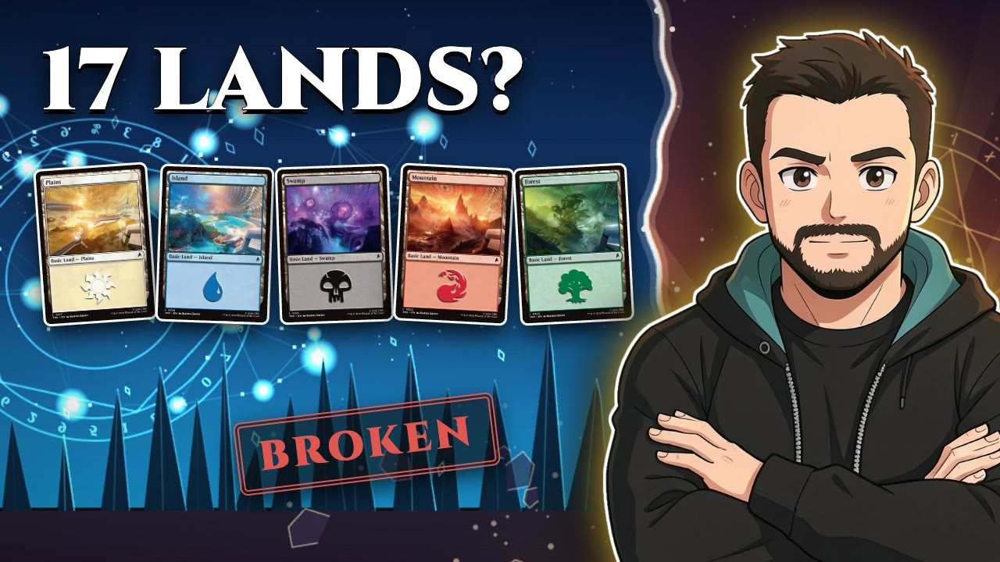

Home · My Rules vs The Data
My Prerelease Deckbuilding Rules vs 3,600,000 Games

Watch the videoSeventeen lands in every sealed deck I've ever built, and three and a half million games say I was wrong. I wrote down the six rules I build by and let 17Lands' public data judge them.
The sealed mana base, after the data
- Sixteen lands, or seventeen if your spells average 3.5 mana or more, or you have lots of mana sinks.
- A splash only for bombs and removal, with three real sources at least, four if you can.
- A Treasure is a bonus, not a source.
- Six sources for a double-colored card.
- At most five expensive cards (five mana or more) in sealed.
- A mana dork or the first land cycler replaces the seventeenth land, never the sixteenth.
- Choose to play, unless you have a very good reason.
The rules on trial
I
If I splash one card, I want at least three sources of that color.The splashed card with 3 sources -0.4, with 4 +0.2, with 5 +0.8. Three opens the door, four keeps it open.
Holds
II
Anything that can repeatedly make a color is a source of that color.A Treasure maker barely moves a splash. With the same real sources, the card plays the same with or without one.
Holds
III
A card with a double-colored cost needs at least six sources of that color.Five sources or fewer, -0.9 to -1.2 on the card; six, +0.2.
Holds
IV
At most five cards that cost five or more.In sealed, six expensive cards -0.7, seven -1.0. Draft barely notices.
Holds
V
A mana producer that costs two or less counts as a land.16 lands and a dork play like 17 lands. 15 lands and a dork lost almost three points.
Holds
VI
Basic landcycling counts as half a land, rounded down, never more than one in total.One cycler already counts as a land. 17 lands plus a cycler did 0.8 worse than 16 lands plus the cycler.
Tweak
0
Seventeen lands. The one I never wrote down.16 lands beat 17 at the same curve by +0.9; in best-of-three, the closest thing to a paper prerelease, +1.3.
Broken
How many lands
Every forty-card deck without dorks or land cyclers, compared with seventeen lands at the same curve: sixteen lands win +0.9 more games per hundred. Eighteen lands fails (-1.0). Fifteen is hard to judge: too few decks to say.
Arena smooths best-of-one opening hands, which protects sixteen-land decks. Best-of-three has no smoothing, and sixteen still wins there (+1.3). It points the same way in all six sets, and for weak and strong players alike.
The exception: if your spells cost 3.5 or more on average, seventeen is right (sixteen would cost -1.8). Mana sinks shrink the gap too: with none, sixteen wins +1.5; with four or more, they're practically even. Card flow (cycling, looting, card draw) doesn't change it.
Play or draw
Who starts is a coin flip, so this is as clean as data gets. Being on the play is worth four and a half to seven points, in fast decks and slow ones, draft and sealed alike. Choose to play.
How it was tested
17Lands' public datasets for six sets (The Hobbit, Marvel Super Heroes, Secrets of Strixhaven, Lorwyn Eclipsed, Avatar: The Last Airbender and Edge of Eternities), in Premier Draft, Sealed, Traditional Draft and Traditional Sealed: 875,442 decks and about 3.6 million games.
No random sixteen-land deck is compared with a random seventeen-land deck: good players build differently, and fast decks run fewer lands. Every comparison is between decks of the same set, format, colors, player skill and curve. One point means one extra win every hundred games. Most games are close, and one uncastable card decides them.
Chapters
- 0:00 Intro
- 0:23 The six rules
- 1:12 Why the mana base decides sealed
- 1:54 How I tested it
- 2:35 Rule I: the splash
- 5:11 Rule II: Treasures
- 5:49 Rule III: double-colored costs
- 6:46 Rule IV: five-drops
- 7:48 Rule V: mana dorks
- 8:29 Rule VI: landcycling
- 9:27 How many lands
- 11:58 Final score
- 12:22 The new rules
- 12:54 One more thing: mulligans
- 13:44 Play or draw
- 14:08 Next time
More from Limited Junkyard
- Free prerelease guides: cheat sheets and every card rated
- Winning decks, card by card
- New videos every week: youtube.com/@LimitedJunkyard